X68000 Z(FW.ver.1.6.2)はDMA転送エラー時の挙動が実機と異なる
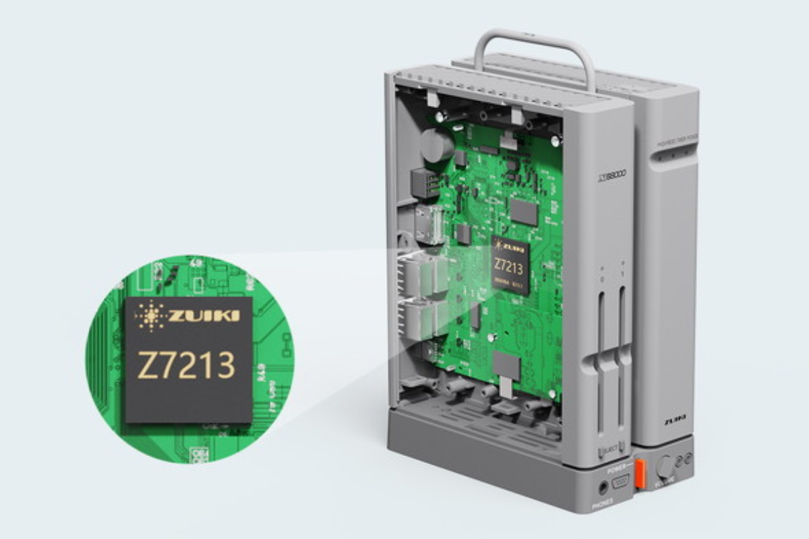
2024-03-23 投稿：
ZにおけるDMA転送エラー時の挙動に疑問を持ったので、可能な限りのエラーコードを出す検査用プログラムを作成し CompactXVI, XM6TypeG ver.3.36, EAK/PE ver.1.6.2 にて、それぞれ挙動を比較しました。
今回実施できた7つの検査のうち、4つの検査にてCompactXVI, XM6TypeG ver.3.36とは異なり、ZのみERRビットが'1'にならず、ERROR CODEも0のままで、あたかも正常動作しているかのように振る舞いました。
また、その4つの中には CompactXVI, XM6TypeG ver.3.36ではERRビットを'1'にして転送は行われない状況で、Zのみ変な値を転送先に書き込んだり、転送元の値まで破壊しているパターンもありました。
正常時ではなくエラー時の話なので、あまり影響が無いのかも知れませんが、もしかしたら「ERRが'0'なので正常に転送できてるよね！(本当はERRが'1'になる状況～'1'ならば別の処理に分岐していた)」→「破壊されたメモリを参照」という事で動作しなくなっているソフトも存在するかも？とか思っています。
今回、僕の力不足で確認できていない検査パターンが幾つかありますが、どなたか確認して結果を教えて下さると嬉しいです。
実害の有無に関わらず、発見された事象は可能な限り実機と同じ挙動となるようにアプデされると良いなぁ・・・と個人的に思っています。
検査方法
1．以下の基本コード(DMA転送が正常に完了するもの)に対し、各検査にて必要な変更を行った後にコンパイル(※1)し、各種DMA転送エラーを発生させるソフトを作成。
2．CompactXVI, XM6TypeG ver.3.36, EAK/PE ver.1.6.2 それぞれの動作結果を確認して比較する。
※1：XM6TypeG ver.3.36にて、GCC2 + LIBC 1.1.32A環境でコンパイルした実行ファイルで検査実施。
先に数個の実行ファイルで XM6TypeG ver.3.36でコンパイルしたものと、Zでコンパイルしたものがバイナリ比較で一致する事を確認済み。
CompactXVIでもコンパイルしようとしたのですが、"spawnvp: No error A:\gcc2\bin\gcc2.x: g2cc1plus が実行できません"と言われてコンパイラが動いてくれませんでした・・・。
補足(本件とは直接関係ありませんが)：
gcc2.doc.htmlに必要メモリが4M～と記載されていました。
GCC2がCompact XVIで動いてくれなかったのは、恐らく当時の環境ではメモリ不足だったものと思われます。
基本コード(d_tes0.cc)
#include <stdio.h>
#include <iocslib.h>
// 型定義 : 符号(S:あり/U:なし) バイト数(サイズ)
typedef signed char S1;
typedef signed short S2;
typedef signed long S4;
typedef unsigned char U1;
typedef unsigned short U2;
typedef unsigned long U4;
// DMACレジスタ(チャンネル#2)アドレス定義 : 外部非公開(モジュール内でのみ使用可)
#define DMAC2_CSR (*((U1*)0xE84080)) // チャンネルステータスレジスタ (R/W)
#define DMAC2_CER (*((U1*)0xE84081)) // チャンネルエラーレジスタ (R)
#define DMAC2_DCR (*((U1*)0xE84084)) // デバイスコントロールレジスタ (R/W)
#define DMAC2_OCR (*((U1*)0xE84085)) // オペレーションコントロールレジスタ (R/W)
#define DMAC2_SCR (*((U1*)0xE84086)) // シーケンスコントロールレジスタ (R/W)
#define DMAC2_CCR (*((U1*)0xE84087)) // チャンネルコントロールレジスタ (R/W)
#define DMAC2_MTC (*((U2*)0xE8408A)) // メモリトランスファ・カウンタ (R/W)
#define DMAC2_MAR (*((void**)0xE8408C)) // メモリアドレスレジスタ (R/W)
#define DMAC2_DAR (*((void**)0xE84094)) // デバイスアドレスレジスタ (R/W)
#define DMAC2_MFC (*((U1*)0xE840A9)) // メモリファンクションコード (R/W)
#define DMAC2_CPR (*((U1*)0xE840AD)) // チャンネルプライオリティレジスタ (R/W)
#define DMAC2_DFC (*((U1*)0xE840B1)) // デバイスファンクションコード (R/W)
// DMAパラメータ定義 : 外部公開(モジュール外で使用可)
#define DMA_DSP8 0x00 // 8ビットポート
#define DMA_DSP16 0x08 // 16ビットポート(標準設定)
#define DMA_SIZE1 0x01 // 転送サイズ1バイト(MAR→DAR,オートリクエスト最大速度で固定)
#define DMA_SIZE2 0x11 // 転送サイズ2バイト(MAR→DAR,オートリクエスト最大速度で固定)
#define DMA_SIZE4 0x21 // 転送サイズ4バイト(MAR→DAR,オートリクエスト最大速度で固定)
#define DMA_ADDR_FIX 0x00 // 転送毎アドレスは固定
#define DMA_ADDR_INC 0x01 // 転送毎アドレスが増加
#define DMA_ADDR_DEC 0x02 // 転送毎アドレスが減少
// グローバル変数(メモリ)
U1 u1_g_Src[8] = {'X','6', '8', '0', '0', '0', ' ', 'Z'}; // 転送元
U1 u1_g_Dst[14] = {'H', 'O', 'G', 'E', '_', 'F', 'U', 'G', 'A', '_', 'P', 'I', 'Y', 'O'}; // 転送先
// DMA初期化
void vd_g_BSP_DmaInit(void* vdpt_src, void* vdpt_dst, // 転送元と転送先のアドレス
U1 u1_mac, U1 u1_dac, // 転送毎のアドレス増減設定
U1 u1_dsp, // デバイスポートサイズ
U1 u1_size, // 転送サイズ
U2 u2_cnt) // 転送回数
{
U1 u1_scr = (u1_mac << 2) | u1_dac;
DMAC2_CSR = 0xFF; // DMAC使用前後にフラグをクリア
DMAC2_DCR = u1_dsp; // メモリ転送は通常16ビットポート設定だが、引数により8ビットポートに設定可能
DMAC2_OCR = u1_size; // 固定：MAR→DAR転送, オートリクエスト最大速度 / 引数により可変：転送サイズ
DMAC2_SCR = u1_scr; // MARとDARに設定したアドレスを転送度に増減させるかの設定
DMAC2_CCR = 0x00; // 転送開始ビットのクリア、及び未使用の機能を停止させる
DMAC2_MTC = u2_cnt; // 転送回数
DMAC2_MAR = vdpt_src; // 転送元アドレス
DMAC2_DAR = vdpt_dst; // 転送先アドレス
DMAC2_MFC = 0x05; // MARはスーパーバイザでアクセスで固定
DMAC2_CPR = 0x03; // 優先度最低で固定
DMAC2_DFC = 0x05; // DARはスーパーバイザでアクセスで固定
}
// DMA転送開始
void vd_g_BSP_DmaStart()
{
DMAC2_CCR |= 0x80;
}
// DMA転送完了待ち (戻値: 0:エラー発生 / 1:転送完了)
U1 u1_g_BSP_DmaWaitCmp()
{
while(!(DMAC2_CSR & 0x90));
return !(DMAC2_CSR & 0x10);
}
// DMAフラグクリア
void vd_g_BSP_DmaClearFlag()
{
DMAC2_CSR = 0xFF;
}
void main(void)
{
S4 i;
S4 s4_ssp = B_SUPER(0);
// DMA初期化
vd_g_BSP_DmaInit(u1_g_Src, // 転送元アドレス
u1_g_Dst, // 転送先アドレス
DMA_ADDR_INC, // 転送元アドレスの転送毎の増減
DMA_ADDR_INC, // 転送先アドレスの転送毎の増減
DMA_DSP16, // デバイスポートサイズ
DMA_SIZE1, // 転送サイズ
8); // 転送回数
printf("--- 転送元と転送先のアドレスを確認 ---\n");
printf("転送元アドレス : %x (%s数アドレスです)\n" , u1_g_Src, (((U4)u1_g_Src) % 2 == 0) ? "偶" : "奇");
printf("転送先アドレス : %x (%s数アドレスです)\n\n", u1_g_Dst, (((U4)u1_g_Dst) % 2 == 0) ? "偶" : "奇");
printf("--- DMA転送 実行前 ---\n");
printf("転送元 : "); for(i= 0; i < 8; i++){ putchar(u1_g_Src[i]);} printf("\n");
printf("転送先 : "); for(i= 0; i < 14; i++){ putchar(u1_g_Dst[i]);} printf("\n");
printf("\n■■■ DMA転送開始 ■■■\n\n");
vd_g_BSP_DmaStart(); // DMA転送開始
if(u1_g_BSP_DmaWaitCmp()) // DMA転送完了待ち ～ エラーチェック
{
// 正常終了 ～ 結果確認
printf("--- DMA転送 正常終了 ---\n");
printf("転送元 : "); for(i= 0; i < 8; i++){ putchar(u1_g_Src[i]);} printf("\n");
printf("転送先 : "); for(i= 0; i < 14; i++){ putchar(u1_g_Dst[i]);} printf("\n");
printf("CSRの値 [HEX]:%x\n",(U1)DMAC2_CSR); // CSR表示
printf("CERの値(エラーコード) [HEX]:%x\n",(U1)DMAC2_CER); // エラーコードを表示
}
else
{ // エラー終了
printf("--- DMA転送 エラー終了 ---\n");
printf("転送元 : "); for(i= 0; i < 8; i++){ putchar(u1_g_Src[i]);} printf("\n");
printf("転送先 : "); for(i= 0; i < 14; i++){ putchar(u1_g_Dst[i]);} printf("\n");
printf("CSRの値 [HEX]:%x\n",(U1)DMAC2_CSR); // CSR表示
printf("CERの値(エラーコード) [HEX]:%x\n",(U1)DMAC2_CER); // エラーコードを表示
}
vd_g_BSP_DmaClearFlag(); // DMAフラグクリア
B_SUPER(s4_ssp);
}
コンフィグレーションエラー (エラーコード：00001)
発生条件① チェインモード時にCNT(継続動作指示)ビットがセットされたとき
→ 複数ブロック転送のノウハウが無いため未実施
発生条件② シングルアドレスモード(DCRのDTYPビットで指定)時にデバイスポートサイズ(DCRのDPSビットで指定)とオペランドサイズ(OCRのSIZEビットで指定)が一致していない場合
→ X68000は基本的にシングルアドレスモードのサポートをうたっていないため未実施
発生条件③ デュアルアドレスモードで外部要求転送(OCRのREQGビット='10'または'11')のとき、デバイスポートサイズを16ビット、オペランドサイズを8ビットに設定したとき
→ X68000 ZのDMACにはREQn端子が無く外部要求転送を行う事ができないため未実施
発生条件④ DCR,OCR,SCRの各ビットに未定義の値をセットした場合
→ 検査番号1：SCRレジスタのMACビットに'11'(未定義)を入れて転送開始する。
コード変更：main()内でvd_g_BSP_DmaInit()をコールする際の第3引数を0x03に変更する(d_tes1.cc)
CompactXVI → CSR:0x91, ERROR CODE:0x01 ◎正常動作：転送は行われていない
XM6TypeG ver.3.36 → CSR:0x11, ERROR CODE:0x01 ◎正常動作：転送は行われていない
EAK/PE ver.1.6.2 → CSR:0x81, ERROR CODE:0x00 ×異常動作：ERRビットが0, ERROR CODEが0, 転送先に転送元の1バイト目が転送回数分埋められた
発生条件⑤ デュアルアドレスモードでデバイスポートサイズが8ビットのとき以外にOCRのSIZEビットに'11'を指定した場合
→ 検査番号2：デバイスポートサイズ16ビットでOCRレジスタのSIZEビットに'11'を入れて転送開始する。
コード変更：main()内でvd_g_BSP_DmaInit()をコールする際の第6引数を0x31に変更する(d_tes2.cc)
CompactXVI → CSR:0x91, ERROR CODE:0x01 ◎正常動作：転送は行われていない
XM6TypeG ver.3.36 → CSR:0x11, ERROR CODE:0x01 ◎正常動作：転送は行われていない
EAK/PE ver.1.6.2 → CSR:0x81, ERROR CODE:0x00 ×異常動作：ERRビットが0, ERROR CODEが0, 転送は行われていない模様
動作タイミングエラー (エラーコード：00010)
発生条件① チェインモードでSTRビット(CCRレジスタ)とACTビット(CSRレジスタ)の両方ともセットされていないときにCNTビットをセットした場合
→ 複数ブロック転送のノウハウが無いため未実施
発生条件② CSR中のCOC,BTC,NDT,ERR,ACTのいずれかのビットが'1'になっているときにSTRビットをセットした場合
→ 検査番号3：正常系基本コード(d_tes0.cc)からDMAC使用前後のCSRのクリアをコメントアウトして2回実行する(2回目の結果が検査結果となる)。
コード変更：vd_g_BSP_DmaInit()内のDMAC2_CSR = 0xFF;をコメントアウトし、main()内の最後vd_g_BSP_DmaClearFlag();もコメントアウトする(d_tes3.cc)
CompactXVI → CSR:0x91, ERROR CODE:0x02 ◎正常動作：転送は行われていない
XM6TypeG ver.3.36 → CSR:0x91, ERROR CODE:0x02 ◎正常動作：転送は行われていない
EAK/PE ver.1.6.2 → CSR:0x91, ERROR CODE:0x02 ◎正常動作：転送は行われていない
発生条件③ STRビットかACTビットが'1'になっている(チャンネルが動作を開始している)ときにDCR,OCR,SCR,CCR,MAR,DAR,MTC,MFC,DFCのいずれかに書き込みを行った場合
→ 検査番号4：STRビットを'1'にして転送開始直後にOCRレジスタに0x11を書き込む。
コード変更：vd_g_BSP_DmaStart()内でDMAC2_CCR |= 0x80;の後にDMAC2_OCR = DMA_SIZE2;を挿入(d_tes4.cc)
CompactXVI → CSR:0x91, ERROR CODE:0x02 ◎正常動作：転送は行われていない
XM6TypeG ver.3.36 → CSR:0x11, ERROR CODE:0x02 ◎正常動作：転送は行われていない
EAK/PE ver.1.6.2 → CSR:0x81, ERROR CODE:0x00 ×異常動作：ERRビットが0, ERROR CODEが0, 普通に転送されてしまった
発生条件④ BTCビットとACTビットが'1'になっているときにCNTビットをセットした場合
→ 複数ブロック転送のノウハウが無いため未実施
アドレスエラー (エラーコード：001rr)
発生条件① ワードやロングワードオペランドの転送を奇数番地から行おうとした場合(実際にアクセスが行われた時点でエラーが発生する)
→ 検査番号5：ダミー変数を宣言し転送元と転送先が奇数番地に配置されている事を確認した後に転送開始する。
コード変更：グローバル変数u1_g_Src[8]の定義箇所の1行上にU1 u1_g_dummy = '\n';を追加し、main()内でvd_g_BSP_DmaInit()をコールする際の第6引数をDMA_SIZE2に変更、第7引数を4に変更し、main()内vd_g_BSP_DmaClearFlag();の後にputchar(u1_g_dummy);を追加(d_tes5.cc)
CompactXVI → CSR:0x91, ERROR CODE:0x05 ◎正常動作：転送は行われていない
XM6TypeG ver.3.36 → CSR:0x11, ERROR CODE:0x0C △異常動作：ERRビットは1, ERROR CODEがカウントエラーの値になっている, 転送は行われていない
EAK/PE ver.1.6.2 → CSR:0x81, ERROR CODE:0x00 ×異常動作：ERRビットが0, ERROR CODEが0, 転送先の値が中途半端に転送され転送元の値も破壊されている
※ X68000におけるC言語にて(可能であればGCC2環境で)変数のアドレスを絶対番地配置指定する方法をご存じの方が見えましたら教えて頂けると大変嬉しいです。
発生条件② DMAバスサイクルのときにDMAのCSピンやIACKピンをLowにした場合(X68000ではハードウェアの故障でもないかぎり、このようなことは起こりません)
→ 物理的に存在するハードウェアが故障しないと起きないとの事なので未実施
バスエラー (エラーコード：010rr)
発生条件① DMAがバスを使用しているときにバスエラーが発生した場合
→ 再現方法が不明なため未実施
カウントエラー (エラーコード：011rr)
発生条件① チェインモード以外のときにMTCレジスタに0を設定し、STRビットをセットしたとき(0バイトの転送を行おうとしたとき)
→ 検査番号6：オートリクエストモード(最大速度)でMTCレジスタに0をセットして転送開始する。
コード変更：main()内でvd_g_BSP_DmaInit()をコールする際の第7引数を0に変更する(d_tes6.cc)
CompactXVI → CSR:0x91, ERROR CODE:0x0D ◎正常動作：転送は行われていない
XM6TypeG ver.3.36 → CSR:0x11, ERROR CODE:0x0D ◎正常動作：転送は行われていない
EAK/PE ver.1.6.2 → CSR:0x11, ERROR CODE:0x0D ◎正常動作：転送は行われていない
発生条件② アレイチェインモードでBTCに0を設定したまま、STRビットをセットした場合
→ 複数ブロック転送のノウハウが無いため未実施
発生条件③ チェインモード、コンティニューモードのときにメモリ(チェインモード時)やBTC(継続動作モード時)からMTCに0がロードされたとき
→ 複数ブロック転送のノウハウが無いため未実施
外部強制停止 (エラーコード：10000)
発生条件① PCLがアボート入力信号としてプログラムされており、STRビットかACTビットが'1'になっているときにアボート信号を与えたとき
→ ZのDMACにはPCL端子が無いので未実施
ソフトウェア強制停止 (エラーコード：10001)
発生条件① STRビットかACTビットが'1'になっているときにCCRレジスタのSAB(ソフトウェアアボート)ビットがセットされたとき
→ 検査番号7：転送開始でCCRレジスタのSTRを立てるところで同時にSABビットも立てる。
コード変更：vd_g_BSP_DmaStart()内のDMAC2_CCR |= 0x80;をDMAC2_CCR |= 0x90;に変更する(d_tes7.cc)
CompactXVI → CSR:0x91, ERROR CODE:0x11 ◎正常動作：転送は行われていない
XM6TypeG ver.3.36 → CSR:0x91, ERROR CODE:0x11 ◎正常動作：転送は行われていない
EAK/PE ver.1.6.2 → CSR:0x91, ERROR CODE:0x11 ◎正常動作：転送は行われていない
検査結果スクショ
検査番号1(CompactXVI)
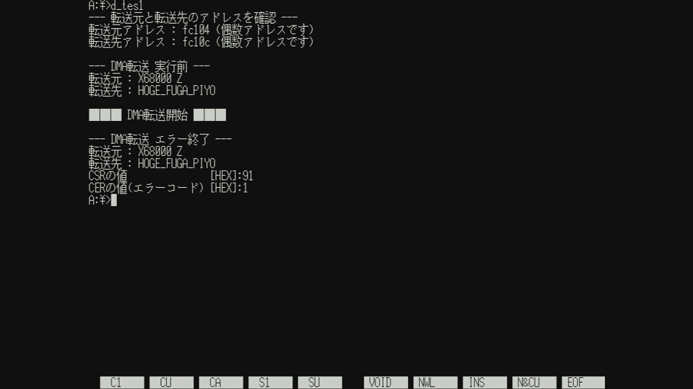
検査番号1(XM6TypeG ver.3.36)
検査番号1(EAK/PE ver.1.6.2)

検査番号2(CompactXVI)
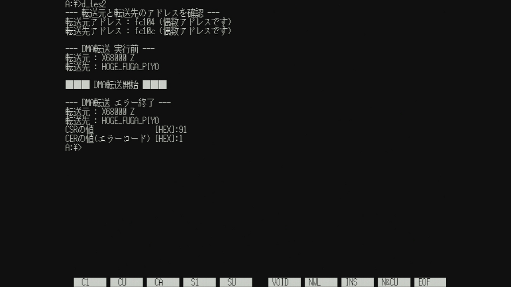
検査番号2(XM6TypeG ver.3.36)
検査番号2(EAK/PE ver.1.6.2)
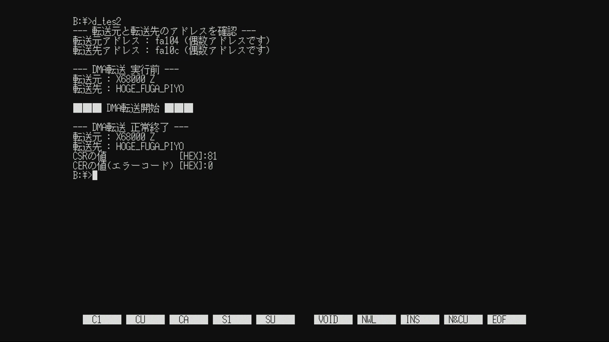
検査番号3(CompactXVI)
検査番号3(XM6TypeG ver.3.36)
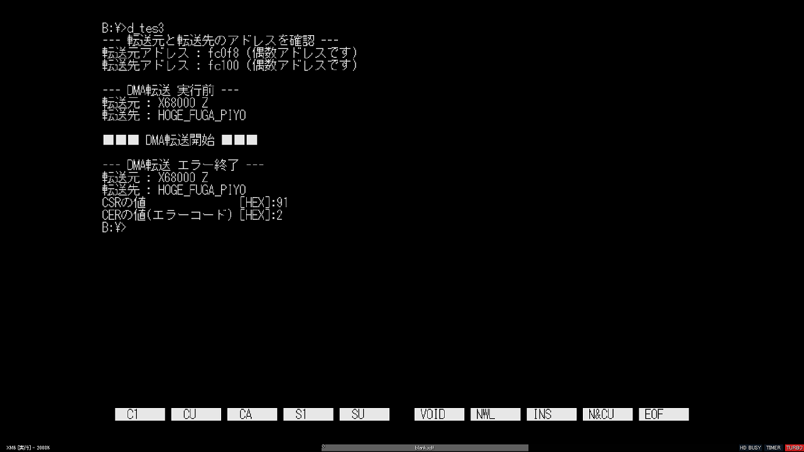
検査番号3(EAK/PE ver.1.6.2)
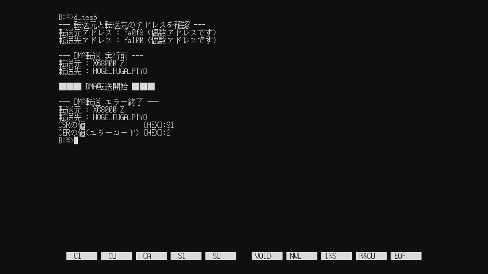
検査番号4(CompactXVI)
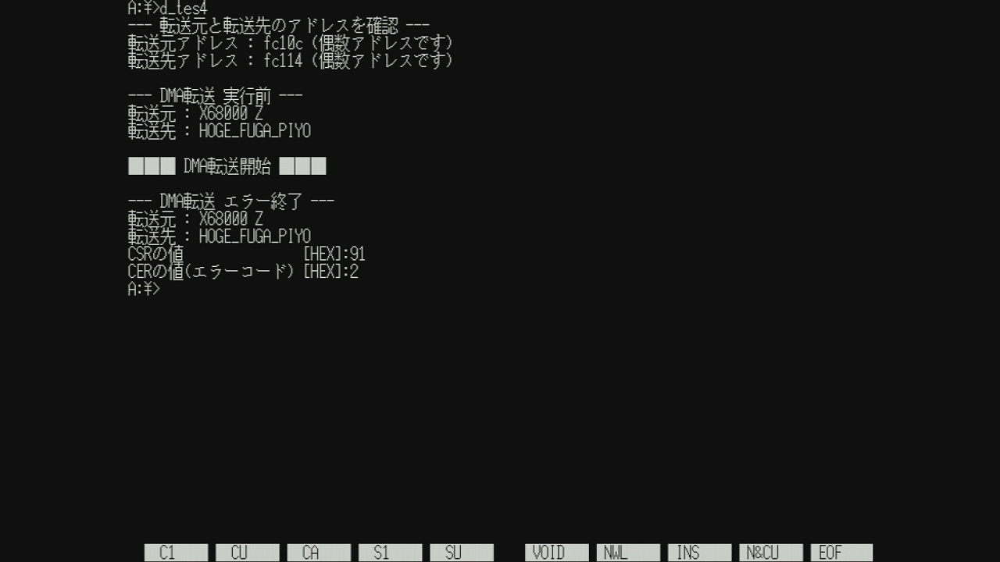
検査番号4(XM6TypeG ver.3.36)

検査番号4(EAK/PE ver.1.6.2)
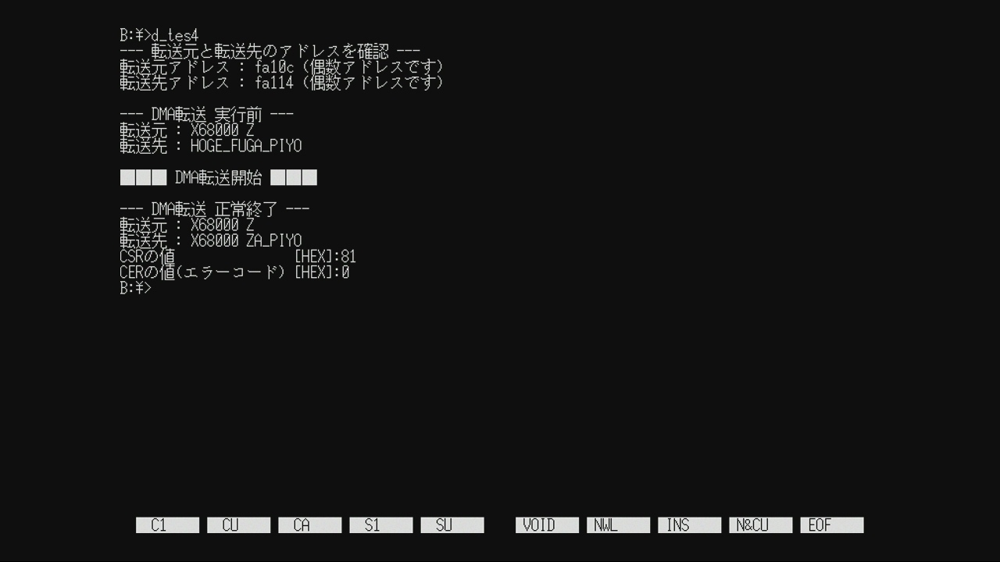
検査番号5(CompactXVI)
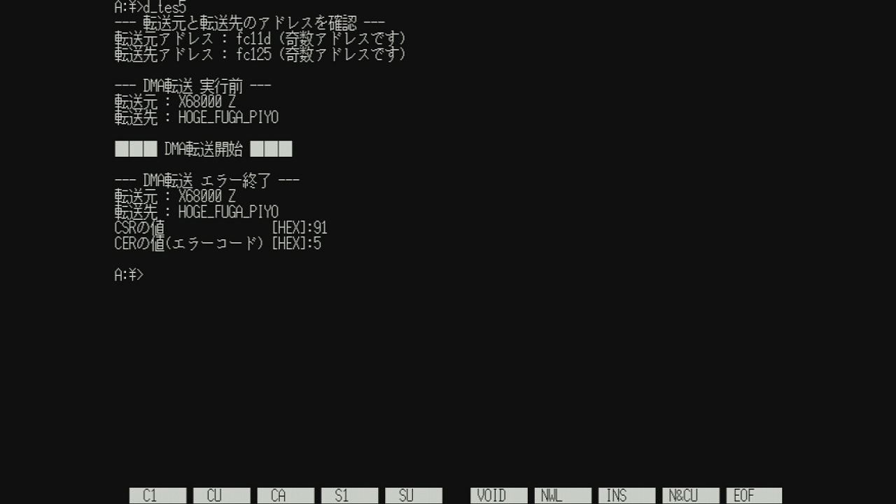
検査番号5(XM6TypeG ver.3.36)
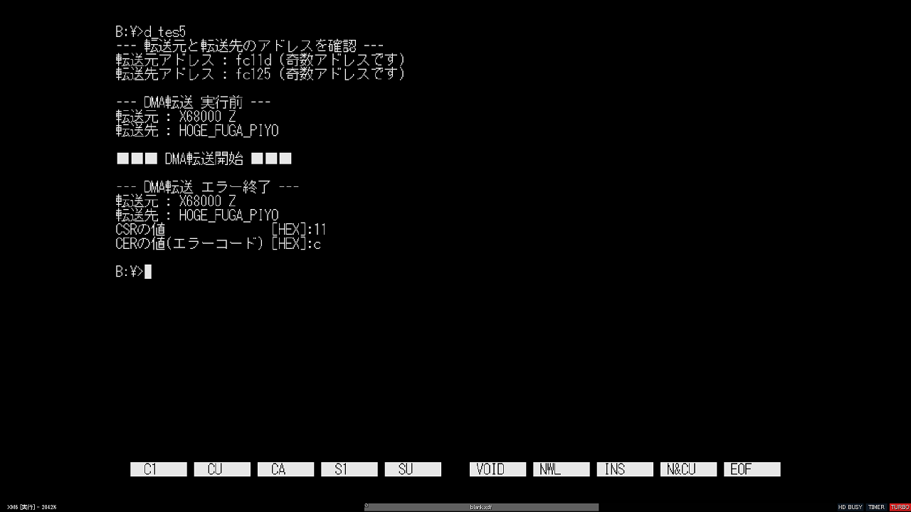
検査番号5(EAK/PE ver.1.6.2)
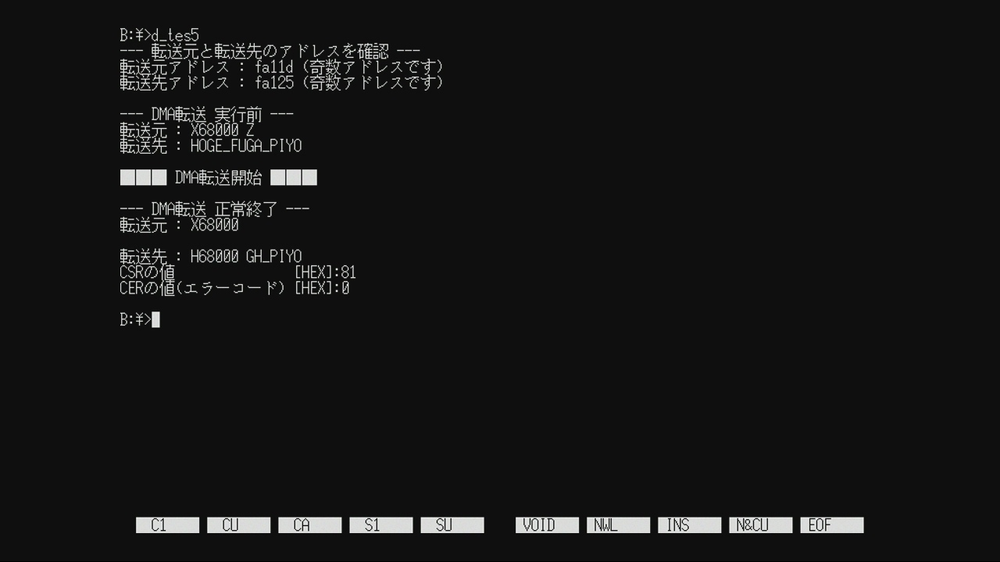
検査番号6(CompactXVI)
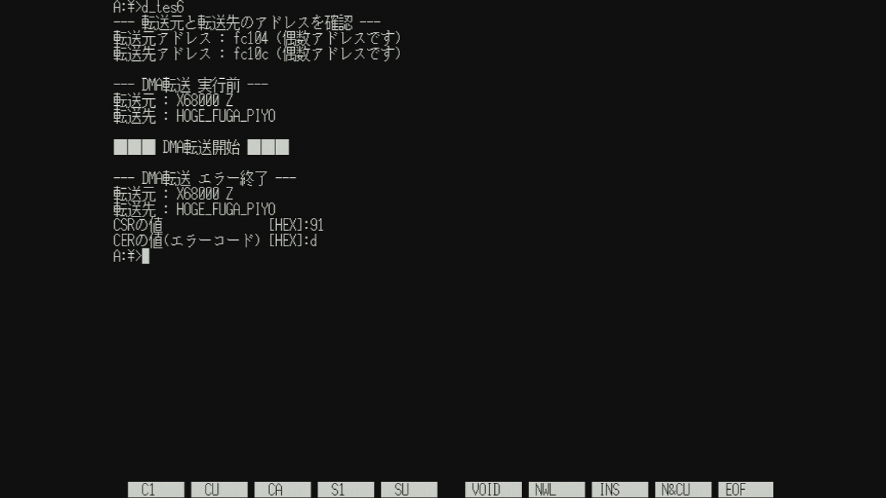
検査番号6(XM6TypeG ver.3.36)
検査番号6(EAK/PE ver.1.6.2)
検査番号7(CompactXVI)
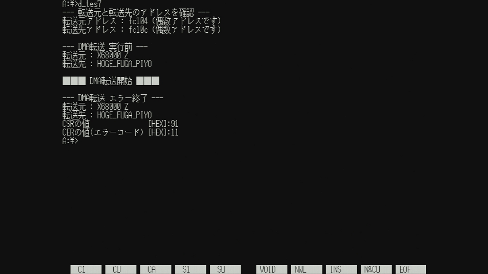
検査番号7(XM6TypeG ver.3.36)
検査番号7(EAK/PE ver.1.6.2)
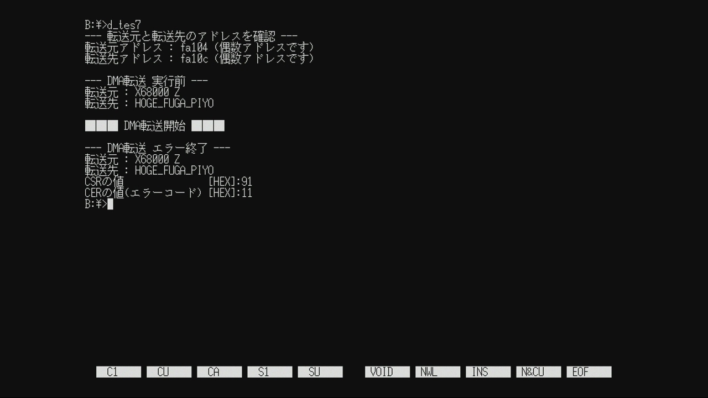
Archive Note
こちらは X68000 Z コミュニティサイト(Z-CLUB) 過去投稿を修正加筆したものです。
基本的に当時の状況に基づいた内容になっています。
元投稿：https://dev.zuiki.com/project-z/community/post/detail/990
[EOF]